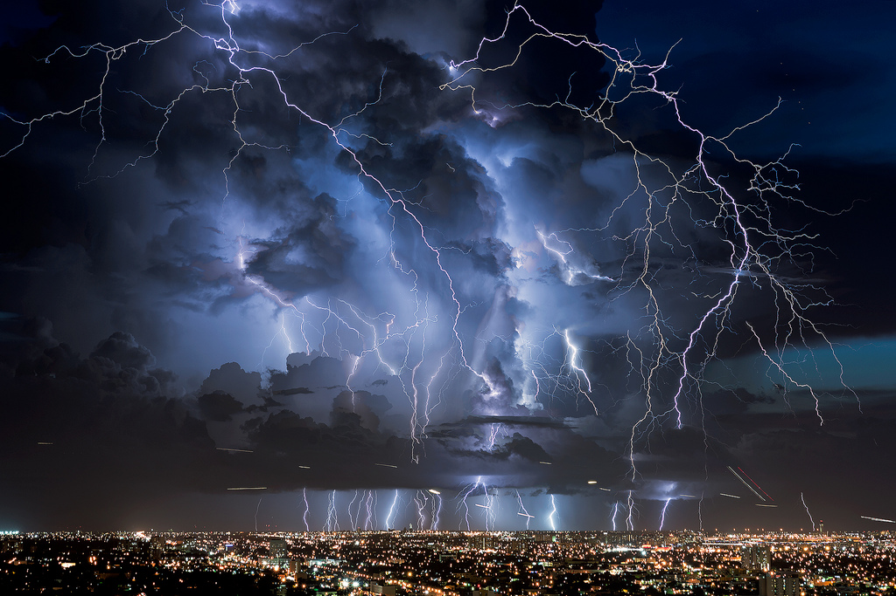

Välk on tugev elektrilahendus, mis tekib tavaliselt äikesepilvedes. See võib toimuda pilvede vahel või pilve ja maapinna vahel. Välgu ajal kuumeneb ümbritsev õhk väga kiiresti ning selle järsk paisumine tekitab heli, mida nimetatakse müristamiseks. Välk võib olla väga ohtlik, sest elektrilahendus kannab suurt energiat. Äikese ajal on kõige turvalisem viibida hoones ja vältida avatud alasid.